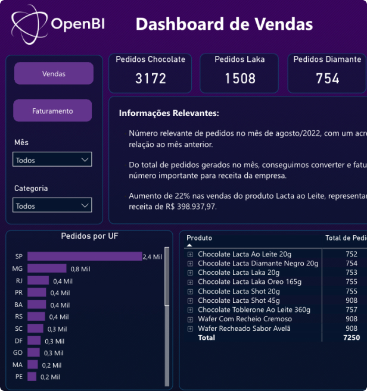
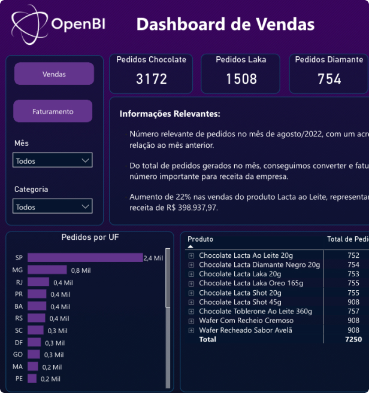

DASHBOARD PERSONALIZADO EM POWER BI
Ganhe destaque profissional utilizando o que há de mais moderno e avançado em análise de dados, gerando insights que faça a diferença em sua carreira ou negócio.
Com o Power BI, podemos transformar os dados da sua empresa em decisões estratégicas com visualizações claras e acessíveis, revelando insights críticos para o seu negócio.


 
